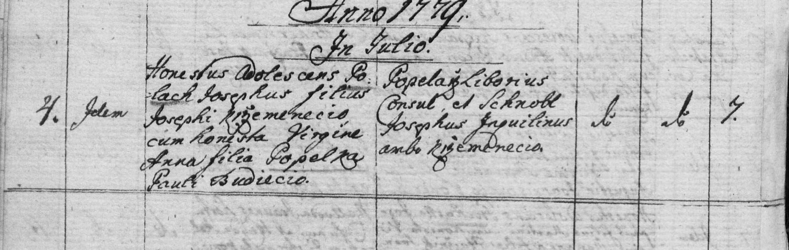
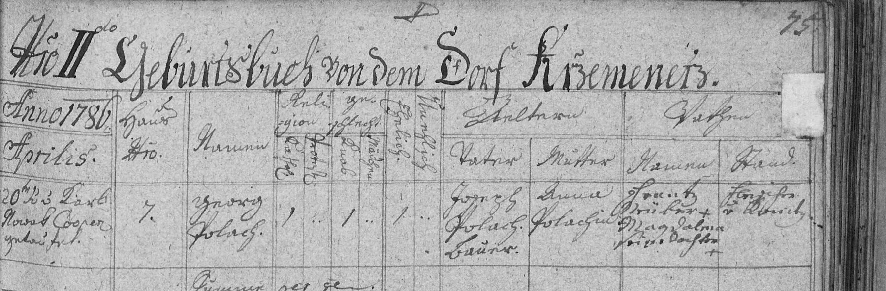
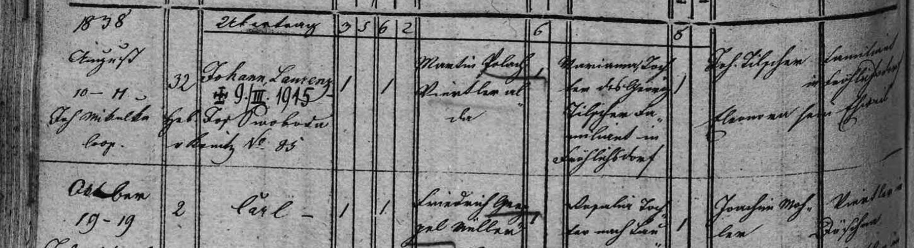
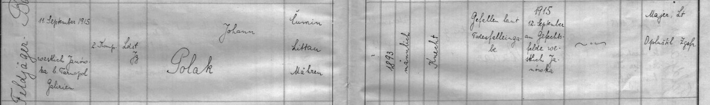

Zápisy z matrik
Všech 42 matričních zápisů a dalších pramenů přehledně podle data. Dostupné výřezy vidíte rovnou zde. Kliknutím na obrázek nebo název otevřete detail s dochovanými podklady a odkazem do archivu. Co zatím chybí nebo si odporuje, najdete v přehledu co ještě hledáme.
| Datum | Druh | Zápis | Týká se |
|---|---|---|---|
| 4. 7. 1779 | sňatek | Sňatek Josefa Poláka a Anny Popelkové O Konice 1771–1785, kniha č. 9098 (Křemenec sn. 6), latinsky  Text z matriky a překladPřepis originálu[Pagus Křzemenetz] Anno 1779 In Julio [Dies] 4. [Copulans] Idem (Carolus Novak, Cooperator) [Sponsi] Honestus Adolescens Polach Josephus filius Josephi Křzemenecio, cum honesta Virgine Anna filia Popelka Pauli Budiecio. [Testes] Popelka Liborius Consul, et Schnoll Josephus Inquilinus ambo Křzemenecio. [Religio] Cathol. [Locus] Křzemenecio [Num. Domus] 7. Překlad4. července 1779 oddal kooperátor Karel Novák počestného mládence Josefa Poláka, syna Josefa Poláka z Křemence, a počestnou pannu Annu, dceru Pavla Popelky z Budětska. Svědci: Libor Popelka, rychtář, a Josef Schnoll, podruh, oba z Křemence. Dům č. 7 v Křemenci. | Josef Polák, Anna Popelková, Josef Polák, Pavel Popelka |
| 20. 4. 1786 | křest / narození | Křest Jiřího Poláka N Konice 1786–1804, kniha č. 9071 (Křemenec od sn. 38)  Text z matriky a překladPřepis origináluTom. II Geburtsbuch von dem Dorf Křemenetz [Anno 1786 Aprilis] 20ten hat P. Karl Nowak Cooperator getauft [Haus No.] 7 [Namen] Georg Polach – kath., Knab, ehelich [Vater] Joseph Polach, Bauer [Mutter] Anna Polachin [Pathen] Franz Krüber (?) +, Magdalena seine Tochter + [Stand] Kürschner (?) v Konitz Překlad20. dubna 1786 pokřtil kooperátor Karel Novák Jiřího, syna Josefa Poláka, sedláka v Křemenci čp. 7, a jeho manželky Anny. Kmotři: František Krüber (?), kožešník z Konice, a jeho dcera Magdalena. Matka je zapsána jen jako „Polachin“ – rodné příjmení tehdejší matriky neuváděly. | Jiří Polák, Josef Polák, Anna Popelková |
| 28. 1. 1812 | sňatek | Sňatek Jiřího Poláka a Marianny Paulíkové O Konice 1804–1817, kniha č. 9100 (Křemenec sn. 44–47)  Text z matriky a překladPřepis originálu[Jahr 1812, Januarius] 28ten Jänner [Hausnummer] 7 [Bräutigam] Georg, Sohn nach dem † Joseph Polach, Bauer von Křemenetz – kath., 26, unverehelicht [Braut] Marianne, Tochter des Wenzel Paulich, Bauer von Čunin No. 9 – kath., 22, unverehelicht [Beistände] Georg Koplar (?), Bauer; Thomas Schmid (?), Viertler, beyde von Kremenetz [Hat getraut] Joseph Schubert, Caplan Hos rite catholice copulatos esse testatur … Překlad28. ledna 1812 byli v Konici oddáni Jiří (26 let), syn zemřelého Josefa Poláka, sedláka v Křemenci (čp. 7), a Marianna (22 let), dcera Václava Paulíka, sedláka v Čuníně čp. 9. Svědci: Jiří Koplar (?), sedlák, a Tomáš … , čtvrtláník, oba z Křemence. | Jiří Polák, Marianna Paulíková, Josef Polák, Václav Paulík |
| 25. 10. 1816 | křest / narození | Křest Martina Poláka N Konice 1804–1817, kniha č. 9072 (oddíly po obcích)  Text z matriky a překladPřepis originálu[Jahr, Monat und Tag der Geburt und Tauf] 1816 October 25 / 25 [Hausnummer] 7 [Namen des Täuflings] Martin – Knab, ehelich [Vater] Georg Pollach, Bauer [Mutter] Marianne, Tochter des Wenzel Paulich, Bauer von Čunin [Pathen] Anton Kubin (?), Schreiber von Runarz; Eleonora, dessen Eheweib [Hat getauft] Martin Pospišil, Kaplan [Hebamme] geb. Hebamme Rosina … von Konitz No. 168 PřekladMartin se narodil a byl pokřtěn 25. října 1816 v Křemenci čp. 7. Otec: Jiří Polák, sedlák. Matka: Marianna, dcera Václava Paulíka, sedláka z Čunína. Kmotři: Antonín Kubín (?), písař z Runářova, a jeho manželka Eleonora. Křtil kaplan Martin Pospíšil. | Martin Polák, Jiří Polák, Marianna Paulíková, Václav Paulík |
| 18. 10. 1837 | sňatek | Sňatek Martina Poláka a Marianny Tilšerové O Konice 1817–1838, kniha č. 9101 (oddíly po obcích)  Text z matriky a překladPřepis originálu[Jahr, Monat und Tag der Trauung] 1837 October 18 [Haus Nro.] 7 [Bräutigam] Martin, Sohn nach Georg Polach, Halblehner in Krzemenetz, und der Marianna geborne Paulich – kath., 21, ledig [Braut] Marianna, Tochter des Georg Tilšer, Familianten in Fröhlichsdorf, und der Barbara geb. Hirth (?), No. 10 – kath., 25, ledig [Beistände] Joseph Polach, Bauer in Krzemenetz; Jos. Tilšer, Familiant in Fröhlichsdorf [Hat getraut] Johann Pazz (?), Pfarrer Mit obervormundschaftlicher Bewilligung dto 22. Sept. 1837 Překlad18. října 1837 se v Konici oddali Martin (21 let), syn zemřelého Jiřího Poláka, pololáníka v Křemenci čp. 7, a Marianny roz. Paulíkové, a Marianna (25 let), dcera Jiřího Tilšera, familianta ve Veselé čp. 10, a Barbory roz. Hirthové (?). Svědci: Josef Polák, sedlák v Křemenci, a Josef Tilšer, familiant ve Veselé. Ženich byl nezletilý, proto bylo třeba svolení vrchního poručenského úřadu (22. 9. 1837). | Martin Polák, Marianna Tilšerová, Jiří Polák, Marianna Paulíková, Jiří Tilšer, Barbora Hirthová (?) |
| 10. 8. 1838 | křest / narození | Křest Jana Poláka N Konice 1834–1846, kniha č. 9075 (oddíly po obcích)  Text z matriky a překladPřepis originálu[Zeit der Geburt und Taufe] 1838 August 10–11; Jos. Mikulka (?), Coop. [Haus Nro.] 32 [Namen des Täuflings] Johann Lorenz [přípisek: † 9/III 1915] [Hebamme] geb. Hebamme Jos. Svoboda (?) aus Konitz No. 85 [Vater] Martin Polach, Gärtler allda [Mutter] Marianna, Tochter des Georg Tilšer, Familiant in Fröhlichsdorf [Pathen] Jos. Tilšer, Familiant in Fröhlichsdorf; Eleonora, sein Eheweib PřekladJan Vavřinec se narodil 10. srpna 1838 v Křemenci čp. 32 a druhý den byl pokřtěn. Otec: Martin Polák, zahradník v Křemenci. Matka: Marianna, dcera Jiřího Tilšera, familianta ve Veselé. Kmotři: Josef Tilšer, familiant ve Veselé, a jeho manželka Eleonora. Pozdější přípisek: zemřel 9. 3. 1915. | Jan Polák, Martin Polák, Marianna Tilšerová, Jiří Tilšer |
| 18. 10. 1860 | křest / narození | Křest Františka Poláka (nejstarší bratr Jana) N Konice 1856–1866, kniha č. 9077 (sv. XIII), oddíly po obcích  Text z matriky a překladPřepis originálu[Dítě] Franz, nar. 18. 10. 1860 v Čuníně čp. 64, pokřtěn 20. 10.; nemanželský syn Anny Pospíšilové. Přípisek: legitimován sňatkem rodičů 18. 11. 1862, otec Jan Polák se k němu přihlásil podpisem. [Otec] Jan Polák, podruh/domkář v Čuníně, syn Martina Poláka, zahradníka v Křemenci, a Marianny roz. Tilšerové z Veselé [Matka] Anna, dcera Jiřího Pospíšila, domkáře v Čuníně, a Anny roz. Švédové ze Studének PřekladFranz, nar. 18. 10. 1860 v Čuníně čp. 64, pokřtěn 20. 10.; nemanželský syn Anny Pospíšilové. Přípisek: legitimován sňatkem rodičů 18. 11. 1862, otec Jan Polák se k němu přihlásil podpisem. Otec: Jan Polák, podruh/domkář v Čuníně, syn Martina Poláka, zahradníka v Křemenci, a Marianny roz. Tilšerové z Veselé. Matka: Anna, dcera Jiřího Pospíšila, domkáře v Čuníně, a Anny roz. Švédové ze Studének. | Jan Polák, Jan Polák, Anna Pospíšilová |
| 18. 11. 1862 | sňatek | Sňatek Jana Poláka a Anny Pospíšilové O Konice 1856–1872, kniha č. 9103, oddíly po obcích (Čunín pag. 84–107)  Text z matriky a překladPřepis originálu[Trauungs-Matrik, Čunín 1862, pag. 90] [Monat, Tag und trauender Priester] 1862 November 18. – cum licentia ordinarii Florianus Deutsch (?), cooper. [Haus-Nro.] 64 / 21 [Bräutigam] Johann Polák, Inmann (?) in Kremenec, Sohn des Martin Polák, Ausgedinger in Kremenec, u. dessen Gattin Marianna geb. Georg Tilšer (?), Familiant in Fröhlichsdorf. [kath.] 1 [Alter] 24 [ledig] 1 [Braut] Anna, Tochter des Georg Pospíšil, Häusler in Bilsko (?), u. dessen Gattin Anna geb. Josef Šveda (?), Häusler in Hradyně (?). [kath.] 1 [Alter] 27 [ledig] 1 [Beistände] Johann Dankmar (?), … ; Anton (?) Pilař (?), … [čtení svědků nejisté] Die politische Bewilligung des k. k. Bezirksamtes Konic dto 8. November 1862 N. 195 der Trauschein liegt im Pfarrarchiv … fasc. XXV ad N. 213/195. Překlad18. listopadu 1862 se v Konici vzali Jan Polák, 24 let, svobodný, podruh v Křemenci (syn Martina Poláka, výměnkáře v Křemenci, a Marianny, dcery Jiřího Tilšera (?), familianta ve Veselé), a Anna, 27 let, svobodná, dcera Jiřího Pospíšila, domkáře v Bílsku (?), a Anny, dcery Josefa Švedy (?), domkáře. Úřední povolení ke sňatku vydal okresní úřad v Konici 8. listopadu 1862 – tehdy bylo nutné politické povolení k sňatku u nemajetných lidí. (Výměnkář = hospodář, který předal usedlost a žije z „výměnku“; podruh = bez vlastního domu.) | Jan Polák, Anna Pospíšilová, Martin Polák, Marianna Tilšerová, Jiří Pospíšil, Anna Švédová, Jiří Tilšer, Josef Švéda |
| 6. 6. 1865 | křest / narození | Křest Jana Poláka N Konice 1856–1866, kniha č. 9077 (sv. XIII), oddíly po obcích  Text z matriky a překladPřepis originálu[Geburtsbuch, Čunín 1865, fol. XIII/205] [Zeit der Geburt und Taufe] 1865 Juni geb. 6, getft. 7 – Ant. Libowarský (?), Coop. [Haus-Nro.] 64 [Namen des Täuflings] Joannes [nad jménem přípisek: † 11/2 1943 v Kostelci] [Hebamme] Heb. Marianna Klapka N. 23 von Rosenberg (?) [kath., Knabe, ehelich] 1 · 1 · 1 [Vater] Johann Polach, Inmann in Čunin, Sohn des Martin Polach, Gärtler in Kremenec, und dess. Eheweibes Marianna geb. Tilšar (?), Familiant in Fröhlichsdorf [Mutter] Anna, Tochter des Georg Pospišil, Häusler in Čunín, und dessen Eheweibes Anna geborne Šveda (?) [škrtnuto: aus Konitz] Häusler in St…(?) [Pathen] Jan Kříž (?), … ; Anna, Gattin (?) [čtení kmotrů nejisté] PřekladJan Polák se narodil 6. června 1865 v Čuníně v domě čp. 64 a druhý den byl pokřtěn. Otec Jan Polák byl podruh (bydlel v cizím domě) v Čuníně, syn Martina Poláka, zahradníka v Křemenci, a Marianny rozené Tilšerové (?) z rodiny familianta ve Veselé (Fröhlichsdorf). Matka Anna byla dcerou Jiřího Pospíšila, domkáře v Čuníně, a Anny rozené Švedové (?). Porodní bábou byla Marianna Klapková. Pozdější přípisek nad jménem: zemřel 11. 2. 1943 v Kostelci (nejspíš Kostelec na Hané). (Familiant = usedlík na malé parcele z rozparcelovaného panského dvora; Gärtler = zahradník.) | Jan Polák, Jan Polák, Anna Pospíšilová, Martin Polák, Marianna Tilšerová, Jiří Pospíšil, Anna Švédová |
| 16. 11. 1868 | křest / narození | Křest Eduarda Poláka (bratr Jana) N Konice 1867–1873, kniha č. 9079 (Čunín sn. 88–129)  Text z matriky a překladPřepis originálu[Dítě] Eduard, nar. 16. 11. 1868 v Čuníně čp. 64, pokřtěn 17. 11. Přípisek: † 25. 7. 1923. [Otec] Jan Polák, podruh/domkář v Čuníně, syn Martina Poláka, zahradníka v Křemenci, a Marianny roz. Tilšerové z Veselé [Matka] Anna, dcera Jiřího Pospíšila, domkáře v Čuníně, a Anny roz. Švédové ze Studének PřekladEduard, nar. 16. 11. 1868 v Čuníně čp. 64, pokřtěn 17. 11. Přípisek: † 25. 7. 1923. Otec: Jan Polák, podruh/domkář v Čuníně, syn Martina Poláka, zahradníka v Křemenci, a Marianny roz. Tilšerové z Veselé. Matka: Anna, dcera Jiřího Pospíšila, domkáře v Čuníně, a Anny roz. Švédové ze Studének. | Jan Polák, Jan Polák, Anna Pospíšilová |
| 19. 11. 1870 | křest / narození | Křest Františky Bavlnkové N Ptení 1857–1879, kniha č. 9692, oddíly po obcích (Stínava sn. 175–210)  Text z matriky a překladPřepis originálu[Geburtsbuch Stinava, pag. 375] [Zeit der Geburt und Taufe] 1870 listopad 19 naroz., 20 křtěn – Vincenc Zdráhal, koop.; bába: Antonie Hradečný ze Stínavy č. 23 [Haus-Nro.] 29 [Täufling] Františka [kath., weiblich, ehelich] 1 · 1 · 1 [Vater] Antonín Bavlnka, domkař ze Stínavy, syn Antonína Bavlnky, podruha z Prostějoviček, a manželky jeho Josefy rozené Nezval z Prostějoviček [Mutter] Františka, dcera Františka Bureše, podruha ze Stínavy, a manželky jeho Františky rozené Jelínek z Hradiska [Pathen] Jan … (?), Josefa (?) – výměník ze Staro-Ptení, jeho manželka PřekladFrantiška se narodila 19. listopadu 1870 ve Stínavě v domě čp. 29 a 20. listopadu byla pokřtěna (farnost Ptení). Otec Antonín Bavlnka byl domkář ve Stínavě; jeho rodiče byli Antonín Bavlnka, podruh z Prostějoviček, a Josefa rozená Nezvalová z Prostějoviček. Matka Františka byla dcerou Františka Bureše, podruha ze Stínavy, a Františky rozené Jelínkové z Hradiska. Kmotry byli manželé, výměnkáři ze Starého Ptení (jméno kmotra nečitelné). Pozn.: v roce 1892 bydlela rodina v čp. 36. | Františka Bavlnková, Antonín Bavlnka, Františka Burešová, Antonín Bavlnka, Josefa Nezvalová, František Bureš, Františka Jelínková |
| 19. 3. 1872 | křest / narození | Křest Josefy Polákové (sestra Jana) N Konice 1867–1873, kniha č. 9079 (Čunín sn. 88–129)  Text z matriky a překladPřepis originálu[Dítě] Josefa, nar. 19. 3. 1872 v Čuníně čp. 25. Přípisek: † 1872. [Otec] Jan Polák, podruh/domkář v Čuníně, syn Martina Poláka, zahradníka v Křemenci, a Marianny roz. Tilšerové z Veselé [Matka] Anna, dcera Jiřího Pospíšila, domkáře v Čuníně, a Anny roz. Švédové ze Studének PřekladJosefa, nar. 19. 3. 1872 v Čuníně čp. 25. Přípisek: † 1872. Otec: Jan Polák, podruh/domkář v Čuníně, syn Martina Poláka, zahradníka v Křemenci, a Marianny roz. Tilšerové z Veselé. Matka: Anna, dcera Jiřího Pospíšila, domkáře v Čuníně, a Anny roz. Švédové ze Studének. | Jan Polák, Jan Polák, Anna Pospíšilová |
| 24. 12. 1873 | křest / narození | Křest Marianny Polákové (sestra Jana) N Konice 1867–1873, kniha č. 9079 (Čunín sn. 88–129)  Text z matriky a překladPřepis originálu[Dítě] Marianna, nar. a pokřtěna 24. 12. 1873 v Čuníně čp. 25. Přípisek: † (v prosinci 1873). [Otec] Jan Polák, podruh/domkář v Čuníně, syn Martina Poláka, zahradníka v Křemenci, a Marianny roz. Tilšerové z Veselé [Matka] Anna, dcera Jiřího Pospíšila, domkáře v Čuníně, a Anny roz. Švédové ze Studének PřekladMarianna, nar. a pokřtěna 24. 12. 1873 v Čuníně čp. 25. Přípisek: † (v prosinci 1873). Otec: Jan Polák, podruh/domkář v Čuníně, syn Martina Poláka, zahradníka v Křemenci, a Marianny roz. Tilšerové z Veselé. Matka: Anna, dcera Jiřího Pospíšila, domkáře v Čuníně, a Anny roz. Švédové ze Studének. | Jan Polák, Jan Polák, Anna Pospíšilová |
| 6. 4. 1876 | křest / narození | Křest Marie Polákové (sestra Jana) N Konice 1874–1879, kniha č. 9080 (Čunín sn. 88–112)  Text z matriky a překladPřepis originálu[Dítě] Marie, nar. a pokřtěna 6. 4. 1876 v Čuníně čp. 25. Přípisek: † 6. 4. 1876. [Otec] Jan Polák, podruh/domkář v Čuníně, syn Martina Poláka, zahradníka v Křemenci, a Marianny roz. Tilšerové z Veselé [Matka] Anna, dcera Jiřího Pospíšila, domkáře v Čuníně, a Anny roz. Švédové ze Studének PřekladMarie, nar. a pokřtěna 6. 4. 1876 v Čuníně čp. 25. Přípisek: † 6. 4. 1876. Otec: Jan Polák, podruh/domkář v Čuníně, syn Martina Poláka, zahradníka v Křemenci, a Marianny roz. Tilšerové z Veselé. Matka: Anna, dcera Jiřího Pospíšila, domkáře v Čuníně, a Anny roz. Švédové ze Studének. | Jan Polák, Jan Polák, Anna Pospíšilová |
| 25. 4. 1878 | křest / narození | Křest Ignáce Kaštánka N Bystřice nad Pernštejnem – obce 1865–1889, kniha č. 15440 (Domanín sn. 77–146)  Text z matriky a překladPřepis originálu[Čas narození a křtu; křtil] 25/26 dubna [1878]; Augustin Brzobohatý, koop. [Č. d.] 15 [Jméno] Ignát – chlapec, manželský. Bába táž [Františka Pöringerová, Bystřice č. 191]. [Přípisky] Oddán 4/5 1903 zde s Josefou Vykutilovou. Sezdán se Šmerdovou (?) Albínou v Rozsochách 5/7 1923. Oddán s Vaší[…]ovou Růženou v Rozsochách 16/10 1934. Zemřel dne 9. května 1952 v Bratrušíně, okr. Bystřice n. P., zapsal dne 10. 5. 1952 [podpis matrikáře]. [Otec] Ignát Kaštánek, podruh v Domaníně, syn Karla Kaštánka, podruha v Domaníně, a Terezie rodem […] (přepsáno přípiskem) [Matka] Františka, dcera Josefa Hradešínského, domkáře v Blažovicích, a Josefy rodem Žilkovy [Kmotři] Ignac Peron (Paroň), celoláník v Domaníně; Josefa Peron, manželka Josefa Paroně, výminkáře v Domaníně PřekladIgnác (Ignát) se narodil 25. dubna 1878 v Domaníně čp. 15 a druhý den ho pokřtil kooperátor Augustin Brzobohatý. Byl manželský. Otec: Ignác Kaštánek, podruh v Domaníně, syn Karla Kaštánka, podruha v Domaníně, a Terezie (rodné příjmení přepsáno pozdějším přípiskem). Matka: Františka, dcera Josefa Hradešínského, domkáře v Blažovicích, a Josefy roz. Žilkové. Kmotři: Ignác Paroň, celoláník v Domaníně, a Josefa Paroňová, manželka výměnkáře Josefa Paroně. Pozdější přípisky: oženil se 4. 5. 1903 v Bystřici s Josefou Vykutilovou, 5. 7. 1923 v Rozsochách s Albínou Šmerdovou (?) a 16. 10. 1934 v Rozsochách s Růženou Vaší…ovou (?). Zemřel 9. května 1952 v Bratrušíně (okres Bystřice nad Pernštejnem). | Ignác Kaštánek, Ignác Kaštánek, Františka Hradešínská, Karel Kaštánek, Terezie, Josef Hradešínský, Josefa Žilková |
| 13. 12. 1878 | křest / narození | Křest Aloise Poláka (bratr Jana) N Konice 1874–1879, kniha č. 9080 (Čunín sn. 88–112)  Text z matriky a překladPřepis originálu[Dítě] Alois, nar. a pokřtěn 13. 12. 1878 v Čuníně čp. 25. Přípisek: † 13. 12. 1878. [Otec] Jan Polák, podruh/domkář v Čuníně, syn Martina Poláka, zahradníka v Křemenci, a Marianny roz. Tilšerové z Veselé [Matka] Anna, dcera Jiřího Pospíšila, domkáře v Čuníně, a Anny roz. Švédové ze Studének PřekladAlois, nar. a pokřtěn 13. 12. 1878 v Čuníně čp. 25. Přípisek: † 13. 12. 1878. Otec: Jan Polák, podruh/domkář v Čuníně, syn Martina Poláka, zahradníka v Křemenci, a Marianny roz. Tilšerové z Veselé. Matka: Anna, dcera Jiřího Pospíšila, domkáře v Čuníně, a Anny roz. Švédové ze Studének. | Jan Polák, Jan Polák, Anna Pospíšilová |
| 17. 10. 1887 | sňatek | Sňatek rodičů legionáře: František Polák a Marie Trnková O Konice 1873–1892, kniha 9104, oddíl Čunín  Text z matriky a překladPřepis origináluVýběrový přepis: [Datum] 1887 Říjen 17 [Ženich] František Polák […] syn Jana Poláka Domkáře v Čuníně a jeho manželky Anny z rodu Jiří Pospíšil Domkář v Čuníně [Věk ženicha] 27 [Nevěsta] Marie […] dcera Josefa Trnky domkáře v Čuníně a jeho manželky Anny […] [Věk nevěsty] 25 7/12 Přepis nezahrnuje všechny sloupce; nejisté rodné příjmení Anny nebylo doplněno. Překlad17. října 1887 se vzali František Polák (27 let) a Marie Trnková (25 let a 7 měsíců). Ženichovi rodiče byli Jan Polák a Anna Pospíšilová. Nevěstin otec Josef Trnka, matka Anna. Marie se podle věku narodila přibližně roku 1862; přesné datum zatím nemáme. | František Polák, Jan Polák |
| 4. 7. 1890 | křest / narození | Narození Františka Poláka – pozdějšího legionáře N Konice 1886–1892, kniha č. 9082 (sv. XVII), oddíl Čunín  Text z matriky a překladPřepis origináluVýběrový přepis, jen bezpečně čitelné údaje: [Narození / křest] 1890 červenec 4 / 7 [Dům] 13 [Jméno] František [Otec] František Polák, podruh v Čuníně, syn Jana Poláka podruha v Čuníně a jeho ženy Anny z rodu Jiřího Pospíšila domkáře v Čuníně. [Matka – začátek] Marie, dcera Josefa Trnky domkáře v Čuníně […] Nejde o úplný diplomatický přepis všech sloupců. PřekladNarození 4. 7. 1890 a křest 7. 7. 1890 v Čuníně čp. 13. Rodiče František Polák a Marie Trnková. Prarodiče z otcovy strany Jan Polák a Anna Pospíšilová spojují legionáře s již vedenou polákovskou větví. | František Polák, Jan Polák |
| 16. 2. 1892 | sňatek | Sňatek Jana Poláka a Františky Bavlnkové O Ptení 1851–1894, kniha č. 9698, oddíly po obcích (Stínava sn. 130–157)  Text z matriky a překladPřepis originálu[Pag.] 311, Stínava 1892 [Monat, Tag und trauender Priester] 1892 únor 16. – Antonín Mohapl, kooperátor [Ženich – č. d.] 25 [Jméno a stav] Jan Polák, domkař v Čuníně, vdovec, syn Jana Poláka, podruha z Čunína, a jeho manželky Anny rozené Pospíšil z Čunína. [kath.] 1 [Alter] 26 měs. 8 [Witwer] 1 [Nevěsta – č. d.] 36 [Jméno a stav] Františka, svobodná neplnoletá dcera Antonína Bavlnky, domkaře ze Stínavy, a jeho manželky Františky rozené Františka (?) Bureš ze Stínavy. [kath.] 1 [Alter] 21 měs. 2 [ledig] 1 [Svědci] Franc Polák, škadler (?) v Čuníně; Josef Krejčí, kovář ve Stínavě Ku sňátku neplnoleté nevěsty dávám před dvěma svědky své svolení já: Antonín Bavlnka, otec. [podpisy:] Josef Krejčí svědek; Franc Polák svědek; [podpis nečitelný – nejspíš za Antonína Bavlnku] […] Ptení 16. února 1892, coram me: Jan Fiurbíček (?), farář. Rodní list ženichův dto Konice far. úřad 29. ledna 1892 č. 60, jeho ohláškový list dto far. úřad Konice 14. února 1892 č. 94, úmrtní list 1. ženy dto far. úřad Konice 29. ledna 1892 č. 54 – v archivu XIII, 1. Ohlášeni byli ve Ptení a v Konici: Dom. 4ta Epiph. 31/1 I. – festo Purif. B. M. V. 2/2 II. – Dom. 5ta Epiph. 7/2 III. Překlad16. února 1892 se v Ptení vzali Jan Polák, domkář z Čunína, vdovec, 26 let a 8 měsíců (syn Jana Poláka, podruha z Čunína, a Anny rozené Pospíšilové z Čunína), a Františka, 21 let a 2 měsíce, svobodná a ještě nezletilá dcera Antonína Bavlnky, domkáře ze Stínavy čp. 36, a Františky rozené Burešové ze Stínavy. Protože nevěsta nebyla plnoletá (tehdy do 24 let), dal k sňatku souhlas její otec Antonín Bavlnka. Svědky byli Franc Polák z Čunína (nejspíš příbuzný ženicha) a Josef Krejčí, kovář ze Stínavy. Jan Polák byl už jednou ženatý – k sňatku doložil úmrtní list první manželky z farnosti Konice. Oddával kooperátor Antonín Mohapl. (Podruh = člověk bez vlastního domu, bydlící v cizím.) | Jan Polák, Františka Bavlnková, Jan Polák, Anna Pospíšilová, Antonín Bavlnka, Františka Burešová, František Bureš |
| 17. 1. 1893 | křest / narození | Křest Jana Poláka (bratr Františka) N Konice 1893–1905, kniha č. 9083 (sv. XVIII), oddíly po obcích; I-N 1893–1905  Text z matriky a překladPřepis originálu[Dítě] Jan, nar. 17. 1. 1893 v Čuníně čp. 25, pokřtěn 19. 1. [Otec] Jan Polák, zahradník v Čuníně čp. 26, syn Jana Poláka, domkáře v Čuníně, a Anny roz. Pospíšilové (dcery Jiřího Pospíšila, domkáře v Čuníně) [Matka] Františka, dcera Antonína Bavlnky, domkáře ve Stínavě, a Františky roz. Burešové (dcery Františka Bureše, podruha/zahradníka ve Stínavě) [Přípisek] Oddán 31. 8. 1915 v Přemyslovicích s Helenou Kmentovou [příjmení upřesněno podle oddacího zápisu 1915]. PřekladJan, nar. 17. 1. 1893 v Čuníně čp. 25, pokřtěn 19. 1.. Otec: Jan Polák, zahradník v Čuníně čp. 26, syn Jana Poláka, domkáře v Čuníně, a Anny roz. Pospíšilové (dcery Jiřího Pospíšila, domkáře v Čuníně). Matka: Františka, dcera Antonína Bavlnky, domkáře ve Stínavě, a Františky roz. Burešové (dcery Františka Bureše, podruha/zahradníka ve Stínavě). Pozdější přípisek: Oddán 31. 8. 1915 v Přemyslovicích s Helenou Kmentovou [příjmení upřesněno podle oddacího zápisu 1915]. | František Polák, Jan Polák, Františka Bavlnková |
| 16. 4. 1893 | křest / narození | Jan Polák, syn Eduarda – druhý Jan ročníku 1893 N Konice 1893–1905, kniha č. 9083 (sv. XVIII), oddíly po obcích; I-N 1893–1905  Text z matriky a překladPřepis origináluVýběrový přepis: [Datum narození / křtu] 1893 dubna 16 / 17 [Dům] 71 [Jméno] Jan [Otec] Eduard Polák podruh v Čuníně, syn Jana Poláka domkáře v Čuníně a jeho manželky Anny z rodu Jiřího Pospíšila domkáře v Čuníně. [Matka – začátek] Filomena […] Další příjmení v mateřské části zde nepřepisována; nejde o úplný diplomatický přepis. PřekladJan se narodil 16. dubna 1893 v Čuníně čp. 71 a druhý den byl pokřtěn. Otec Eduard Polák byl synem Jana Poláka a Anny Pospíšilové, matka se jmenovala Filomena. Jde o dalšího doloženého vnuka společných předků; případné válečné úmrtí tohoto Jana není potvrzeno. | František Polák, Jan Polák |
| 1894 | křest / narození | Křest Vincencie Polákové (sestra Františka) N Konice 1893–1905, kniha č. 9083 (sv. XVIII), oddíly po obcích; I-N 1893–1905  Text z matriky a překladPřepis originálu[Dítě] Vincencie, nar. 1894 v Čuníně čp. 26 (přesné datum v zápise špatně čitelné) [Otec] Jan Polák, zahradník v Čuníně čp. 26, syn Jana Poláka, domkáře v Čuníně, a Anny roz. Pospíšilové (dcery Jiřího Pospíšila, domkáře v Čuníně) [Matka] Františka, dcera Antonína Bavlnky, domkáře ve Stínavě, a Františky roz. Burešové (dcery Františka Bureše, podruha/zahradníka ve Stínavě) [Přípisek] Sezdána 1. 10. 1917 v Konici s Methodějem Veselým (?). PřekladVincencie, nar. 1894 v Čuníně čp. 26 (přesné datum v zápise špatně čitelné). Otec: Jan Polák, zahradník v Čuníně čp. 26, syn Jana Poláka, domkáře v Čuníně, a Anny roz. Pospíšilové (dcery Jiřího Pospíšila, domkáře v Čuníně). Matka: Františka, dcera Antonína Bavlnky, domkáře ve Stínavě, a Františky roz. Burešové (dcery Františka Bureše, podruha/zahradníka ve Stínavě). Pozdější přípisek: Sezdána 1. 10. 1917 v Konici s Methodějem Veselým (?). | František Polák, Jan Polák, Františka Bavlnková |
| 18. 12. 1896 | křest / narození | Křest Růženy Polákové (sestra Františka) N Konice 1893–1905, kniha č. 9083 (sv. XVIII), oddíly po obcích; I-N 1893–1905  Text z matriky a překladPřepis originálu[Dítě] Růžena, nar. 18. 12. 1896 v Čuníně čp. 26, pokřtěna 19. 12. [Otec] Jan Polák, zahradník v Čuníně čp. 26, syn Jana Poláka, domkáře v Čuníně, a Anny roz. Pospíšilové (dcery Jiřího Pospíšila, domkáře v Čuníně) [Matka] Františka, dcera Antonína Bavlnky, domkáře ve Stínavě, a Františky roz. Burešové (dcery Františka Bureše, podruha/zahradníka ve Stínavě) [Přípisek] Sezdána 29. 8. 1921 v Konici s Bedřichem Kuplou (?). PřekladRůžena, nar. 18. 12. 1896 v Čuníně čp. 26, pokřtěna 19. 12.. Otec: Jan Polák, zahradník v Čuníně čp. 26, syn Jana Poláka, domkáře v Čuníně, a Anny roz. Pospíšilové (dcery Jiřího Pospíšila, domkáře v Čuníně). Matka: Františka, dcera Antonína Bavlnky, domkáře ve Stínavě, a Františky roz. Burešové (dcery Františka Bureše, podruha/zahradníka ve Stínavě). Pozdější přípisek: Sezdána 29. 8. 1921 v Konici s Bedřichem Kuplou (?). | František Polák, Jan Polák, Františka Bavlnková |
| 12. 1. 1899 | křest / narození | Křest Arnošta Poláka (bratr Františka) N Konice 1893–1905, kniha č. 9083 (sv. XVIII), oddíly po obcích; I-N 1893–1905  Text z matriky a překladPřepis originálu[Dítě] Arnošt, nar. 12. 1. 1899 v Čuníně čp. 26, pokřtěn 14. 1. [Otec] Jan Polák, zahradník v Čuníně čp. 26, syn Jana Poláka, domkáře v Čuníně, a Anny roz. Pospíšilové (dcery Jiřího Pospíšila, domkáře v Čuníně) [Matka] Františka, dcera Antonína Bavlnky, domkáře ve Stínavě, a Františky roz. Burešové (dcery Františka Bureše, podruha/zahradníka ve Stínavě) [Přípisek] Zemřel 13. 2. 1899. PřekladArnošt, nar. 12. 1. 1899 v Čuníně čp. 26, pokřtěn 14. 1.. Otec: Jan Polák, zahradník v Čuníně čp. 26, syn Jana Poláka, domkáře v Čuníně, a Anny roz. Pospíšilové (dcery Jiřího Pospíšila, domkáře v Čuníně). Matka: Františka, dcera Antonína Bavlnky, domkáře ve Stínavě, a Františky roz. Burešové (dcery Františka Bureše, podruha/zahradníka ve Stínavě). Pozdější přípisek: Zemřel 13. 2. 1899. | František Polák, Jan Polák, Františka Bavlnková |
| 12. 7. 1900 | křest / narození | Křest Josefa Poláka (bratr Františka) N Konice 1893–1905, kniha č. 9083 (sv. XVIII), oddíly po obcích; I-N 1893–1905  Text z matriky a překladPřepis originálu[Dítě] Josef, nar. 12. 7. 1900 v Čuníně čp. 26, pokřtěn 14. 7. [Otec] Jan Polák, zahradník v Čuníně čp. 26, syn Jana Poláka, domkáře v Čuníně, a Anny roz. Pospíšilové (dcery Jiřího Pospíšila, domkáře v Čuníně) [Matka] Františka, dcera Antonína Bavlnky, domkáře ve Stínavě, a Františky roz. Burešové (dcery Františka Bureše, podruha/zahradníka ve Stínavě) [Přípisek] Zemřel 23. 10. 1900. PřekladJosef, nar. 12. 7. 1900 v Čuníně čp. 26, pokřtěn 14. 7.. Otec: Jan Polák, zahradník v Čuníně čp. 26, syn Jana Poláka, domkáře v Čuníně, a Anny roz. Pospíšilové (dcery Jiřího Pospíšila, domkáře v Čuníně). Matka: Františka, dcera Antonína Bavlnky, domkáře ve Stínavě, a Františky roz. Burešové (dcery Františka Bureše, podruha/zahradníka ve Stínavě). Pozdější přípisek: Zemřel 23. 10. 1900. | František Polák, Jan Polák, Františka Bavlnková |
| 4. 10. 1901 | křest / narození | Křest Bohumily Polákové (sestra Františka) N Konice 1893–1905, kniha č. 9083 (sv. XVIII), oddíly po obcích; I-N 1893–1905  Text z matriky a překladPřepis originálu[Dítě] Bohumila, nar. 4. 10. 1901 v Čuníně čp. 26, pokřtěna 5. 10. [Otec] Jan Polák, zahradník v Čuníně čp. 26, syn Jana Poláka, domkáře v Čuníně, a Anny roz. Pospíšilové (dcery Jiřího Pospíšila, domkáře v Čuníně) [Matka] Františka, dcera Antonína Bavlnky, domkáře ve Stínavě, a Františky roz. Burešové (dcery Františka Bureše, podruha/zahradníka ve Stínavě) [Přípisek] Zemřela 14. 1. 1959 v Senici na Hané. PřekladBohumila, nar. 4. 10. 1901 v Čuníně čp. 26, pokřtěna 5. 10.. Otec: Jan Polák, zahradník v Čuníně čp. 26, syn Jana Poláka, domkáře v Čuníně, a Anny roz. Pospíšilové (dcery Jiřího Pospíšila, domkáře v Čuníně). Matka: Františka, dcera Antonína Bavlnky, domkáře ve Stínavě, a Františky roz. Burešové (dcery Františka Bureše, podruha/zahradníka ve Stínavě). Pozdější přípisek: Zemřela 14. 1. 1959 v Senici na Hané. | František Polák, Jan Polák, Františka Bavlnková |
| 4. 5. 1903 | sňatek | Sňatek Ignáce Kaštánka a Josefy Vykutilové O Bystřice nad Pernštejnem 1895–1942, kniha č. 15461 (Bystřice sn. 2–176, Dvořiště sn. 177–190)  Text z matriky a překladPřepis originálu[Č.] 5 [Den oddavek a oddával] 4. května [1903]; Karel Endl, kooperátor [Ženich – bydliště, č. d.] Domanín 32 [Ženich] Ignác Kaštánek, čeledín v Domaníně, manž. syn Ignáce Kaštánka, podruha v Domaníně, a Františky roz. Hradešínský, oba rodiče katolíci, otec zemřel, matka žije; n. 26/4 1878 – katol., 25 let, svobodný [Nevěsta – bydliště, č. d.] Bystřice 337 [Nevěsta] Josefa Vykutilova, služka v Bystřici, manž. dcera Františka Vykutila, podruha v Bystřici, a Kateřiny rozené Kroutilovy, oba rodiče katolíci, otec žije, matka zemřela; n. 25/12 1880 – katol., 22 let, svobodná [Svědci] Franz Illek (?), krejčí v Rozsochách; František Karásek, kovářský tovaryš z Bystřice; oba nábož. katol. [Poznámka] K tomuto sňatku své nezletilé dcery dávám v přítomnosti podepsaných svědků své otcovské svolení. Frant. Vykutil, otec; podepsal R. Vágner, farář. František Hek (?) svědek, František Karásek svědek, oba podepsal R. Vágner, far. Rapulář s přílohami uložen ve far. arch. f. III ... č. 19 Překlad4. května 1903 oddal kooperátor Karel Endl v Bystřici nad Pernštejnem tyto snoubence: Ženich: Ignác Kaštánek, čeledín v Domaníně čp. 32, narozen 26. 4. 1878, 25 let, svobodný, katolík; syn Ignáce Kaštánka, podruha v Domaníně (již zemřelého), a Františky roz. Hradešínské (žijící). Nevěsta: Josefa Vykutilová, služka v Bystřici čp. 337, narozena 25. 12. 1880, 22 let, svobodná, katolička; dcera Františka Vykutila, podruha v Bystřici (žijícího), a Kateřiny roz. Kroutilové (již zemřelé). Svědci: Franz Illek (?), krejčí v Rozsochách, a František Karásek, kovářský tovaryš z Bystřice. Protože nevěsta byla nezletilá, dal její otec František Vykutil ke sňatku před svědky své svolení. | Ignác Kaštánek, Josefa Vykutilová, Ignác Kaštánek, Františka Hradešínská, František Vykutil, Kateřina Kroutilová |
| 5. 1. 1904 | křest / narození | Křest Josefa Poláka (bratr Františka) N Konice 1893–1905, kniha č. 9083 (sv. XVIII), oddíly po obcích; I-N 1893–1905  Text z matriky a překladPřepis originálu[Dítě] Josef, nar. 5. 1. 1904 v Čuníně čp. 26, pokřtěn 6. 1. [Otec] Jan Polák, nar. 6. 6. 1865, zahradník v Čuníně, syn Jana Poláka, domkáře v Čuníně, a Anny roz. Pospíšilové [Matka] Františka, nar. 19. 11. 1870, dcera Antonína Bavlnky, domkáře ve Stínavě, a Františky roz. Burešové; sezdáni 9. 2. 1892 [Přípisek] Zemřel 19. 2. 1905. PřekladJosef, nar. 5. 1. 1904 v Čuníně čp. 26, pokřtěn 6. 1.. Otec: Jan Polák, nar. 6. 6. 1865, zahradník v Čuníně, syn Jana Poláka, domkáře v Čuníně, a Anny roz. Pospíšilové. Matka: Františka, nar. 19. 11. 1870, dcera Antonína Bavlnky, domkáře ve Stínavě, a Františky roz. Burešové; sezdáni 9. 2. 1892. Pozdější přípisek: Zemřel 19. 2. 1905. | František Polák, Jan Polák, Františka Bavlnková |
| 7. 10. 1905 | křest / narození | Křest Boženy Kaštánkové (sestra Václava) N Zvole 1844–1924, kniha č. 16569 (oddíly po obcích; Dolní Rožínka 1910–1924 sn. 207–223)  Text z matriky a překladPřepis originálu[Dítě] Božena, nar. 7. 10. 1905 v Dolní Rožínce čp. 26, pokřtěna 8. 10.; kmotra Ludmila Vykutilová, svobodná nádenice v Bystřici [Otec] Ignác Kaštánek, nádeník/kočí v Dolní Rožínce, syn Ignáce Kaštánka, podruha v Domaníně, a Františky roz. Hradešínské; nar. 26. 4. 1878 [Matka] Josefa, dcera Františka Vykutila, nádeníka v Bystřici, a Kateřiny roz. Kroutilové; nar. 25. 12. 1880; oddáni v Bystřici 4. 5. 1903 [Přípisek] Biřmována 1. 6. 1922 v Rozsochách; přípisek „Bystřice … 1934“. PřekladBožena, nar. 7. 10. 1905 v Dolní Rožínce čp. 26, pokřtěna 8. 10.; kmotra Ludmila Vykutilová, svobodná nádenice v Bystřici. Otec: Ignác Kaštánek, nádeník/kočí v Dolní Rožínce, syn Ignáce Kaštánka, podruha v Domaníně, a Františky roz. Hradešínské; nar. 26. 4. 1878. Matka: Josefa, dcera Františka Vykutila, nádeníka v Bystřici, a Kateřiny roz. Kroutilové; nar. 25. 12. 1880; oddáni v Bystřici 4. 5. 1903. Pozdější přípisek: Biřmována 1. 6. 1922 v Rozsochách; přípisek „Bystřice … 1934“. | Václav Kaštánek, Ignác Kaštánek, Josefa Vykutilová |
| 27. 12. 1905 | křest / narození | Křest Františka Poláka N Konice 1893–1905, kniha č. 9083 (sv. XVIII), oddíly po obcích; I-N 1893–1905  Text z matriky a překladPřepis originálu[Kniha a strana] XVIII, 553 [Poř. č.] 13 [Rok, měsíc a den – narození / křest] 1905 prosinec 27 / 28 [Číslo domu] 26 [Jméno] František [Nábož.] římsko-katolické [Pohlaví] mužské [Rod] manželský [Na okraji] Oddán s Františkou Krejčí z Konice dne 9/11 1929 ve Strážisku. [nad jménem: 263] [Otec] Polák Jan, narozený 6. června 1865, zahradník v Čuníně, syn Jana Poláka, zahradníka v Čuníně, a jeho manželky Anny z rodu Jiřího Pospíšila, domkaře v Čuníně. Oddáni: [viz u matky] [Nábož.] římsko-katolické [Matka] Františka, narozená 19. listopadu 1870, dcera Antonína Bavlnky, domkaře ve Stinavě, a manželky jeho Františky z rodu Františka Bureše, domkaře ze Stinavy. 9. února 1892 [Nábož.] římsko-katolické [Křtitel] Josef Ohrenščík (?), kaplan [Zkoušená bába] Josefa Štaffová v Čuníně číslo 18 [Kmotrové] Antonín Šmehlík (?), Vincencie – domkař ve Stinavě a manželka jeho PřekladFrantišek Polák se narodil 27. prosince 1905 v Čuníně v domě čp. 26 a druhý den byl pokřtěn (farnost Konice). Otec Jan Polák (narozen 6. června 1865) byl zahradník v Čuníně, syn zahradníka Jana Poláka a Anny, dcery domkáře Jiřího Pospíšila z Čunína. Matka Františka (narozena 19. listopadu 1870) byla dcerou Antonína Bavlnky, domkáře ve Stinavě, a Františky, dcery domkáře Františka Bureše ze Stinavy. Rodiče se podle křtu vzali 9. února 1892 (oddací matrika Ptení uvádí 16. února 1892). Porodní bábou byla Josefa Štaffová z Čunína čp. 18, kmotry manželé Šmehlíkovi (?) ze Stinavy. Pozdější přípisek na okraji: sňatek s Františkou Krejčí z Konice 9. 11. 1929 ve Strážisku. (Zahradník = drobný venkovský usedlík s domkem a zahradou.) | František Polák, Jan Polák, Františka Bavlnková, Jan Polák, Anna Pospíšilová, Antonín Bavlnka, Františka Burešová |
| 9. 3. 1908 | křest / narození | Křest Marie Polákové (sestra Františka) N Konice 1906–1922, kniha č. 9084 (oddíly po obcích; Čunín 1906–6/1922 sn. 259–306)  Text z matriky a překladPřepis originálu[Dítě] Marie, nar. 9. 3. 1908 v Čuníně čp. 26, pokřtěna 12. 3. [Otec] Jan Polák, nar. 6. 6. 1865, zahradník v Čuníně [Matka] Františka, nar. 19. 11. 1870, dcera Antonína Bavlnky ze Stínavy [Přípisek] Zemřela 28. 1. 1912. PřekladMarie, nar. 9. 3. 1908 v Čuníně čp. 26, pokřtěna 12. 3.. Otec: Jan Polák, nar. 6. 6. 1865, zahradník v Čuníně. Matka: Františka, nar. 19. 11. 1870, dcera Antonína Bavlnky ze Stínavy. Pozdější přípisek: Zemřela 28. 1. 1912. | František Polák, Jan Polák, Františka Bavlnková |
| 28. 6. 1908 | křest / narození | Křest Josefa Vincence Kaštánka (bratr Václava) N Zvole 1844–1924, kniha č. 16569 (oddíly po obcích; Dolní Rožínka 1910–1924 sn. 207–223)  Text z matriky a překladPřepis originálu[Dítě] Josef Vincenc, nar. 28. 6. 1908 v Dolní Rožínce čp. 26, pokřtěn 29. 6.; kmotři Vincenc a Anna Koutníkovi, topič v lihovaru v Dolní Rožínce [Otec] Ignác Kaštánek, nádeník/kočí v Dolní Rožínce, syn Ignáce Kaštánka, podruha v Domaníně, a Františky roz. Hradešínské; nar. 26. 4. 1878 [Matka] Josefa, dcera Františka Vykutila, nádeníka v Bystřici, a Kateřiny roz. Kroutilové; nar. 25. 12. 1880; oddáni v Bystřici 4. 5. 1903 [Přípisek] Zemřel 1909. PřekladJosef Vincenc, nar. 28. 6. 1908 v Dolní Rožínce čp. 26, pokřtěn 29. 6.; kmotři Vincenc a Anna Koutníkovi, topič v lihovaru v Dolní Rožínce. Otec: Ignác Kaštánek, nádeník/kočí v Dolní Rožínce, syn Ignáce Kaštánka, podruha v Domaníně, a Františky roz. Hradešínské; nar. 26. 4. 1878. Matka: Josefa, dcera Františka Vykutila, nádeníka v Bystřici, a Kateřiny roz. Kroutilové; nar. 25. 12. 1880; oddáni v Bystřici 4. 5. 1903. Pozdější přípisek: Zemřel 1909. | Václav Kaštánek, Ignác Kaštánek, Josefa Vykutilová |
| 25. 2. 1910 | křest / narození | Křest Ignáce (Hynka) Kaštánka (bratr Václava) N Zvole 1844–1924, kniha č. 16569 (oddíly po obcích; Dolní Rožínka 1910–1924 sn. 207–223)  Text z matriky a překladPřepis originálu[Dítě] Ignác, nar. 25. 2. 1910 v Zámecké (Dolní) Rožínce čp. 26; kmotři Vincenc a Anna Koutníkovi [Otec] Ignác Kaštánek, nádeník/kočí v Dolní Rožínce, syn Ignáce Kaštánka, podruha v Domaníně, a Františky roz. Hradešínské; nar. 26. 4. 1878 [Matka] Josefa, dcera Františka Vykutila, nádeníka v Bystřici, a Kateřiny roz. Kroutilové; nar. 25. 12. 1880; oddáni v Bystřici 4. 5. 1903 [Přípisek] Biřmován 1. 6. 1922 v Rozsochách; oddán 22. 9. 1935 (Marie Pl…ová?). PřekladIgnác, nar. 25. 2. 1910 v Zámecké (Dolní) Rožínce čp. 26; kmotři Vincenc a Anna Koutníkovi. Otec: Ignác Kaštánek, nádeník/kočí v Dolní Rožínce, syn Ignáce Kaštánka, podruha v Domaníně, a Františky roz. Hradešínské; nar. 26. 4. 1878. Matka: Josefa, dcera Františka Vykutila, nádeníka v Bystřici, a Kateřiny roz. Kroutilové; nar. 25. 12. 1880; oddáni v Bystřici 4. 5. 1903. Pozdější přípisek: Biřmován 1. 6. 1922 v Rozsochách; oddán 22. 9. 1935 (Marie Pl…ová?). | Václav Kaštánek, Ignác Kaštánek, Josefa Vykutilová |
| 10. 3. 1912 | křest / narození | Křest Františky Polákové (sestra Františka) N Konice 1906–1922, kniha č. 9084 (oddíly po obcích; Čunín 1906–6/1922 sn. 259–306)  Text z matriky a překladPřepis originálu[Dítě] Františka, nar. 10. 3. 1912 v Čuníně čp. 26, pokřtěna 11. 3. [Otec] Jan Polák, nar. 6. 6. 1865, zahradník v Čuníně [Matka] Františka, nar. 19. 11. 1870, dcera Antonína Bavlnky ze Stínavy [Přípisek] Oddána 23. 2. 1936 (ve Strážisku?). PřekladFrantiška, nar. 10. 3. 1912 v Čuníně čp. 26, pokřtěna 11. 3.. Otec: Jan Polák, nar. 6. 6. 1865, zahradník v Čuníně. Matka: Františka, nar. 19. 11. 1870, dcera Antonína Bavlnky ze Stínavy. Pozdější přípisek: Oddána 23. 2. 1936 (ve Strážisku?). | František Polák, Jan Polák, Františka Bavlnková |
| 28. 10. 1912 | křest / narození | Křest Huberta Kaštánka (bratr Václava) N Zvole 1844–1924, kniha č. 16569 (oddíly po obcích; Dolní Rožínka 1910–1924 sn. 207–223)  Text z matriky a překladPřepis originálu[Dítě] Hubert, nar. 28. 10. 1912 v Dolní Rožínce čp. 26, pokřtěn 3. 11.; kmotři Vincenc a Anna Koutníkovi [Otec] Ignác Kaštánek, panský kočí v Dolní Rožínce, syn Ignáce Kaštánka, podruha v Domaníně, a Františky roz. Hradešínské; nar. 26. 4. 1878 [Matka] Josefa, dcera Františka Vykutila, nádeníka v Bystřici, a Kateřiny roz. Kroutilové; nar. 25. 12. 1880; oddáni v Bystřici 4. 5. 1903 [Přípisek] Oddán 24. 10. 1935 s Helenou Vítkovou (?). PřekladHubert, nar. 28. 10. 1912 v Dolní Rožínce čp. 26, pokřtěn 3. 11.; kmotři Vincenc a Anna Koutníkovi. Otec: Ignác Kaštánek, panský kočí v Dolní Rožínce, syn Ignáce Kaštánka, podruha v Domaníně, a Františky roz. Hradešínské; nar. 26. 4. 1878. Matka: Josefa, dcera Františka Vykutila, nádeníka v Bystřici, a Kateřiny roz. Kroutilové; nar. 25. 12. 1880; oddáni v Bystřici 4. 5. 1903. Pozdější přípisek: Oddán 24. 10. 1935 s Helenou Vítkovou (?). | Václav Kaštánek, Ignác Kaštánek, Josefa Vykutilová |
| 26. 2. 1914 | křest / narození | Křest Antonína Poláka (bratr Františka) N Konice 1906–1922, kniha č. 9084 (oddíly po obcích; Čunín 1906–6/1922 sn. 259–306)  Text z matriky a překladPřepis originálu[Dítě] Antonín, nar. 26. 2. 1914 v Čuníně čp. 26, pokřtěn 1. 3. [Otec] Jan Polák, nar. 6. 6. 1865, zahradník v Čuníně [Matka] Františka, nar. 19. 11. 1870, dcera Antonína Bavlnky ze Stínavy [Přípisek] Oddán 18. 10. 1941 v Konici s Annou Hýblovou. PřekladAntonín, nar. 26. 2. 1914 v Čuníně čp. 26, pokřtěn 1. 3.. Otec: Jan Polák, nar. 6. 6. 1865, zahradník v Čuníně. Matka: Františka, nar. 19. 11. 1870, dcera Antonína Bavlnky ze Stínavy. Pozdější přípisek: Oddán 18. 10. 1941 v Konici s Annou Hýblovou. | František Polák, Jan Polák, Františka Bavlnková |
| 15. 9. 1914 | křest / narození | Křest Václava Kaštánka N Zvole 1844–1924, kniha č. 16569 (oddíly po obcích; Dolní Rožínka 1910–1924 sn. 207–223)  Text z matriky a překladPřepis originálu[Narození a křest] 15. září / 20. [září 1914]; křtil František Pokora, farář [Č. domu] 26 [Jméno křtěnce] Václav – chlapec, manželský. Biřmován 17/6 1929. Zkouš. bába Antonie Zábrsová (?) ze Zvole č. 61. [Přípisek] Oddán ve Zvoli s Helenou Šlosarovou 19/10 1941. [Otec] Kaštánek Ignác, kočí v Dolní Rožínce, manželský syn Ignáce Kaštánka, nádeníka v Domaníně, a Františky rodem Hradešínský, 26/4 1878. [Matka] Josefa, manželská dcera Františka Vykutila (čteno podle oddací matriky 1903; zde „Oyketila“), nádeníka v Bystřici, a Kateřiny rodem Kroutil, 25/12 1880. [Kmotr] Vincenc Koutník, dráb v Dolní Rožínce. Oddáni v Bystřici 4/5 1903. PřekladDne 15. září 1914 se v Dolní Rožínce v domě čp. 26 narodil chlapec Václav, manželský; 20. září ho pokřtil farář František Pokora. Porodila ho zkoušená porodní bába Antonie Zábrsová (?) ze Zvole č. 61. Biřmován byl 17. 6. 1929. Otec: Ignác Kaštánek, kočí v Dolní Rožínce, narozen 26. 4. 1878, syn Ignáce Kaštánka, nádeníka v Domaníně, a Františky roz. Hradešínské. Matka: Josefa, narozena 25. 12. 1880, dcera Františka Vykutila, nádeníka v Bystřici, a Kateřiny roz. Kroutilové. Rodiče se vzali v Bystřici 4. 5. 1903. Kmotrem byl Vincenc Koutník, dráb v Dolní Rožínce. Pozdější přípisek: 19. 10. 1941 se Václav ve Zvoli oženil s Helenou Šlosárovou. | Václav Kaštánek, Helena Šlosárová, Ignác Kaštánek, Josefa Vykutilová, Ignác Kaštánek, Františka Hradešínská, František Vykutil, Kateřina Kroutilová |
| 31. 8. 1915 | sňatek | Jan Polák a Helena Kmentová – doložená vojenská služba O Přemyslovice 1895–1947, kniha 9681  Text z matriky a překladPřepis origináluVýběrový přepis: [Datum] 1915 srpen 31 [Ženich] Polák Jan narozený 17. ledna 1893, tovární pomocník, toho času vojín c. k. zeměbraneckého pluku číslo 13., nyní na dovolené v Čuníně, […] syn Jana Poláka domkáře v Čuníně a jeho manželky Františky z rodu Antonína Bavlnky, domkáře ve Stínavě. [Nevěsta – začátek] Kmentova Helena, narozená 10. února 1895 […] Přepis nezahrnuje všechny sloupce a doklady. Překlad31. srpna 1915 se Jan Polák (*17. 1. 1893), bratr Františka (*1905), oženil s Helenou Kmentovou (*10. 2. 1895). Zápis přímo dokládá jeho vojenskou službu u c. k. zeměbraneckého pluku č. 13. Služba u tohoto pluku sama nedokazuje totožnost s padlým u FJB 5. | František Polák |
| 11. 9. 1915 | úmrtí | Nepřiřazený kandidát: Johann Polak (*1893), FJB 5 Matrika c. a k. praporu polních myslivců č. 5, 1903–1917; později hraničářský prapor 7  Text z matriky a překladPřepis origináluVýběrový přepis třetího řádku strany 38: [Útvar] Feldjäger Baon No. 5 [Datum a místo] 11. September 1915; oestlich Janowka b. Tarnopol, Galizien [Setnina / hodnost] 2. Komp.; Landst. Jg. [Jméno] Johann Polak [Rodiště] Čunin; Littau; Mähren [Vyznání / rok / pohlaví / stav] röm. kath.; 1893; männlich; verheirat. [Příčina] Gefallen laut Todesfallanzeige [Pohřeb] 1915 am 12. September am Gefechtsfelde oestlich Janowka Jde o výběrový přepis; není to přesné přiřazení k osobě v rodokmenu. PřekladJohann Polak, ročník 1893, z Čunína na Litovelsku na Moravě, ženatý katolík, u 2. setniny 5. praporu polních myslivců. Padl 11. září 1915 východně od Janowky u Tarnopolu v Haliči a byl pohřben následující den na bojišti. Zápis neuvádí rodiče, manželku ani den a měsíc narození. Přesná totožnost v rodině zůstává neověřena. | |
| 3. 3. 1919 | křest / narození | Křest Josefa Kaštánka (bratr Václava) N Zvole 1844–1924, kniha č. 16569 (oddíly po obcích; Dolní Rožínka 1910–1924 sn. 207–223)  Text z matriky a překladPřepis originálu[Dítě] Josef, nar. 3. 3. 1919 v Dolní Rožínce čp. 26, pokřtěn 9. 3.; kmotři Vincenc a Anna Koutníkovi [Otec] Ignác Kaštánek, kočí v Dolní Rožínce, syn Ignáce Kaštánka, podruha v Domaníně, a Františky roz. Hradešínské; nar. 26. 4. 1878 [Matka] Josefa, dcera Františka Vykutila, nádeníka v Bystřici, a Kateřiny roz. Kroutilové; nar. 25. 12. 1880; oddáni v Bystřici 4. 5. 1903 [Přípisek] Biřmován 17. 6. 1929 v Rozsochách; oddán v Bystřici 24. 9. 1939 se Štěpánkou Škudovou (?). PřekladJosef, nar. 3. 3. 1919 v Dolní Rožínce čp. 26, pokřtěn 9. 3.; kmotři Vincenc a Anna Koutníkovi. Otec: Ignác Kaštánek, kočí v Dolní Rožínce, syn Ignáce Kaštánka, podruha v Domaníně, a Františky roz. Hradešínské; nar. 26. 4. 1878. Matka: Josefa, dcera Františka Vykutila, nádeníka v Bystřici, a Kateřiny roz. Kroutilové; nar. 25. 12. 1880; oddáni v Bystřici 4. 5. 1903. Pozdější přípisek: Biřmován 17. 6. 1929 v Rozsochách; oddán v Bystřici 24. 9. 1939 se Štěpánkou Škudovou (?). | Václav Kaštánek, Ignác Kaštánek, Josefa Vykutilová |
| 9. 11. 1929 | sňatek | Sňatek Františka Poláka a Františky Krejčí O Konice 1922–1940, kniha č. 9106 (sv. XII), oddíly po obcích  Text z matriky a překladPřepis originálu[Svazek a str.] sv. XII, str. 31 [Rok, měsíc, den a místo oddavek] 1929, listopad 9, ve farním kostele ve Strážisku [Oddávající kněz] Z delegace far. úřadu Konice dto 7/11. 1929 č. 1146, dle se off. odd. listu far. úřad Strážisko dto 13/XI. 1929 č. 214 oddal Josef Klos, farář ve Strážisku [Ohlášeni] Ohlášeni byli ve far. kostele v Konici XXI., XXII., XXIII. neděli po sv. Duchu, t. j. 13., 20., 27. října 1929 [Ženich – bydliště a č. domu] Čunín 26 [Ženich] Polák František, řezník v Čuníně, narozený 27. prosince 1905 v Čuníně, pol. okres Litovel, syn Jana Poláka, zahradníka v Čuníně, a jeho manželky Františky, dcery Antonína Bavlnky, domkáře ve Stinavě. 1) Ohl. protokol snoubenců f. ú. Konice dto 10/10. 1929 č. 32 2) Křest. list nevěsty f. úřad Olomouc-Nová Ulice dto 14/XI. 1929 č. 2519 3) Se off. odd. list f. ú. Strážisko dto 13/XI. 1929 č. 214 [uložen] v archivu [Náboženství] řím.-katolické [Stáří] 23 let 10 měs. [Stav] svobodný [Nevěsta – bydliště a č. domu] Konice 233 [Nevěsta] Františka Krejčí, továrnická (?) dělnice v Konici, narozená v zemské porodnici Olomouc-Nová Ulice 10. listopadu 1906, pol. okres Olomouc-město, dcera Filomeny Krejčí, svobodné, dcery Františka Krejčího, domkáře v Konici, a jeho manželky Františky [Náboženství] řím.-katolické [Stáří] 22 let 11 měs. [Stav] svobodná [Svědci] Kupka Bedřich, zedník v Čuníně; Krejčí Vilém, obuvník v Konici 232 [Poznámka] Vyrozumění o dodání se off. odd. listu posláno f. úřadu ve Strážisku dne 16/XI. 1929 č. 1183 (?) Překlad9. listopadu 1929 se ve farním kostele ve Strážisku vzali František Polák, řezník z Čunína čp. 26 (narozen 27. prosince 1905 v Čuníně, 23 let, svobodný), a Františka Krejčí z Konice čp. 233 (narozena 10. listopadu 1906 v zemské porodnici v Olomouci, 22 let, svobodná). Ženichovi rodiče: Jan Polák, zahradník v Čuníně, a Františka, dcera Antonína Bavlnky, domkáře ve Stinavě. Nevěsta byla nemanželská dcera Filomeny Krejčí; její dědeček František Krejčí byl domkář v Konici. Oddával strážišťský farář Josef Klos z pověření konického faráře, svědky byli zedník Bedřich Kupka z Čunína a obuvník Vilém Krejčí z Konice. Domkář = majitel malého domku s malým nebo žádným polem. | František Polák, Františka Krejčí, Jan Polák, Františka Bavlnková, Filomena Krejčí |
| 1915–1920 | jiný pramen | František Polák (* 1890) v československých legiích | František Polák |